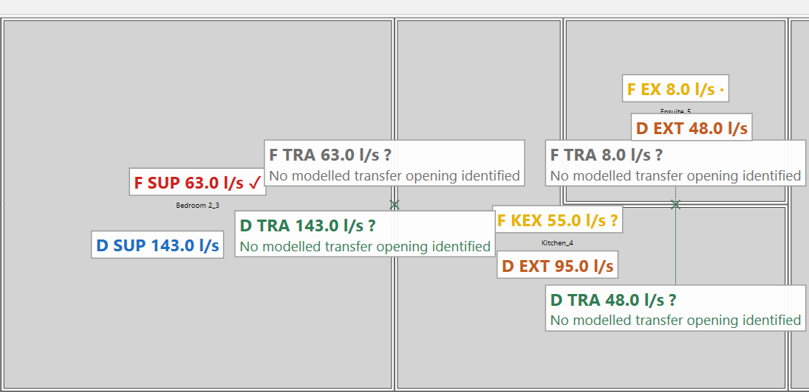
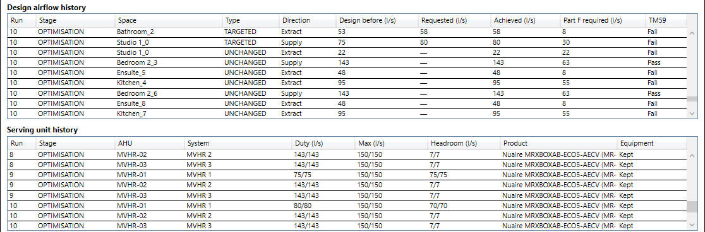
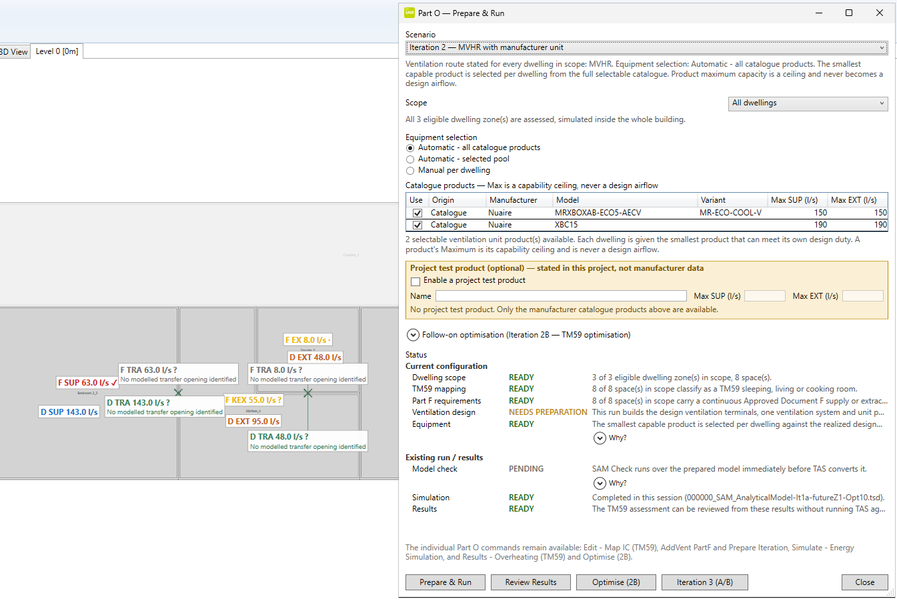
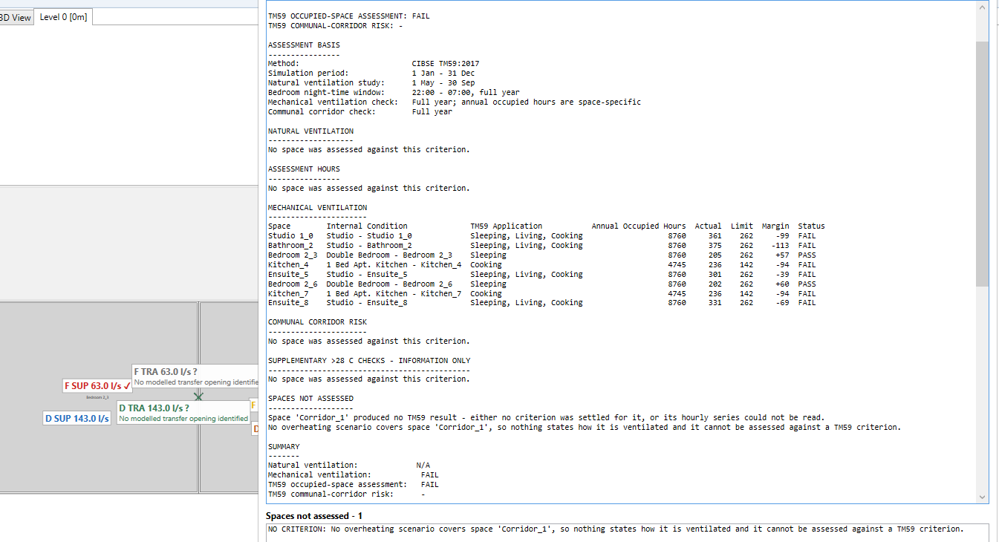

Automated testing
Model, desktop UI, HVAC-systems and Tas/TM59 regression suites run in Release builds at each merged milestone.
Progress recordSAM combines a shared analytical model with engineering logic, simulation and auditable decision workflows — from Revit and Rhino to Part F ventilation, Tas simulation and CIBSE TM59.

Each capability below links to the public record behind it.
Model, desktop UI, HVAC-systems and Tas/TM59 regression suites run in Release builds at each merged milestone.
Progress recordA twelve-point H1–H12 matrix on real Rhino 8/9 and Revit 2025–2027 hosts. The 2026-Q3 hardening candidate passed 12 / 12.
Acceptance recordOn the validation flat, SAM's TM59 figures match Tas's own overheating report on every criterion exercised; limitations are stated alongside.
Validation recordApproved Document F (Vol. 1, 2021) traced paragraph by paragraph: calculated, read from geometry, manual check or out of scope. An assessment, not a certification.
Traceability matrixPeer-reviewed since 2021, including Springer Lecture Notes in Civil Engineering and BSA proceedings.
PublicationsVersioned Windows installer with release notes. Part F / Part O is on the 2026-Q3 release line; earlier installers do not include it.
Latest releaseOne three-dwelling model, from airflow requirement to TM59 result. Each step keeps its own authority; each image is a real SAM screen.
SAM derives the Approved Document F airflow for each room from the model and shows it on the plan beside the design.

Calculation proposes; the engineer reviews. Here Iteration 2B raised design airflow against overheating — the requirement and unit capacity stay unchanged.

Each dwelling gets the smallest catalogue unit that meets its design duty; its maximum is a ceiling, never a design value. The scenario runs in Tas with its state recorded.

The building is simulated in Tas and each room assessed against CIBSE TM59. On 2050s design weather this case still fails in 6 of 8 rooms — and SAM says so.

Same unit, different meaning. SAM keeps them separate — not a pipeline where one becomes the next.
The minimum the regulation demands.
Authority: RegulationWhat the engineer decides to ventilate at.
Authority: EngineerWhat the selected unit can deliver — a ceiling, not a target.
Authority: ProductWhat flows in the simulated or commissioned system.
Authority: OperationA short end-to-end video of this workflow is in preparation.
A .NET platform, not a plugin: authoring tools feed one shared model, and engineering and simulation work on it. Grasshopper is one host among several.
SAM analytical modelSpaces, panels, apertures, adjacency, constructions, internal conditions, systems and results — one JSON model, reused rather than rebuilt.
Where to look in the code
The model carries engineering decisions, simulation and review — not only geometry.
Part F ventilation traced to Approved Document F. Part O Iterations 1a–2B frozen September 2026 after licensed Tas runs with TM59 assessment. Acoustic restriction, bypass and boost are not implemented; open natural-ventilation items are in the validation record.
Plant-room and system templates; deterministic generation of explicit mechanical-ventilation systems; catalogue unit selection with capacity as a ceiling, never a design airflow.
Moist-air calculations built on PsychroLib and IAPWS-IF97, with Mollier charts and air-process loads. SAM_Mollier is described in a peer-reviewed CESBP 2025 paper.
Analytical models from Revit (add-in and Rhino.Inside.Revit, 2025–2027 in release acceptance) and Rhino 8/9; IFC, gbXML, IES VE GEM, BHoM and Honeybee exchange.
Deterministic scenario preparation, execution and result extraction through the Tas adapter, with run diagnostics persisted per scenario.
TM59 cross-checked against Tas's own report; licensed Tas acceptance recorded per Part O iteration; H1–H12 release acceptance on real host applications.
The same design simulated through explicit MVHR systems in Tas Systems instead of inter-zone air movements, with the unchanged TM59 assessment.
Direct generation of the non-HVAC model — geometry, constructions, schedules, gains, weather — with ideal-air loads. HVAC airside and plant are not yet covered; Tas remains the primary pathway. SAM_OpenStudio
An Open Cascade kernel: closed-shell creation and repair, booleans, STEP/IGES exchange and adjacency clusters in Grasshopper. Tested, with CI; not yet wired into the core model. SAM_OCCT
SAM supports engineering workflows that contribute to assessment methods; compliance still depends on the complete project methodology and toolchain. A TM59 pass is an overheating assessment result, not a Part O compliance certificate.
Developed in the open; published at peer-reviewed building-simulation venues.
M. Dengusiak, J. Ziolkowski, M. Dengusiak. Presented at BSA 2026, Bozen-Bolzano, June 2026; proceedings forthcoming.
M. Dengusiak, J. Ziolkowski. Lecture Notes in Civil Engineering 795, Springer 2026.
M. Dengusiak, J. Ziolkowski. Lecture Notes in Civil Engineering 796, pp. 693–708, Springer 2026.
M. Dengusiak, J. Ziolkowski, M. Dengusiak. Bozen-Bolzano University Press 2025.
M. Dengusiak, J. Ziolkowski.
Full list: ResearchGate – Michal Dengusiak.
An independent open-source project.
{kind=link}
{kind=link}